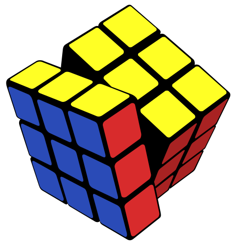
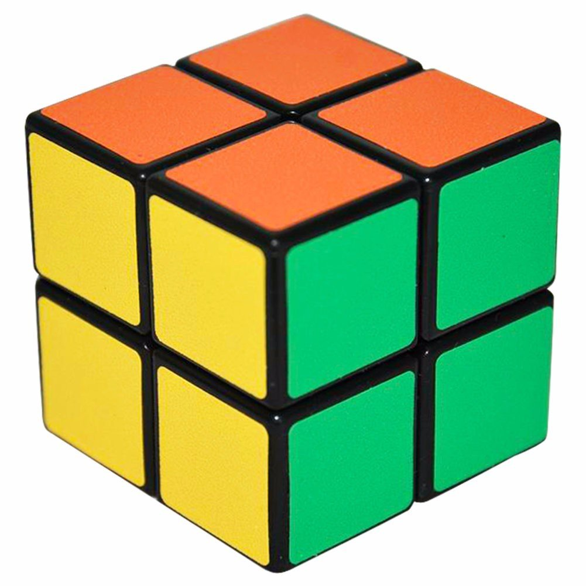
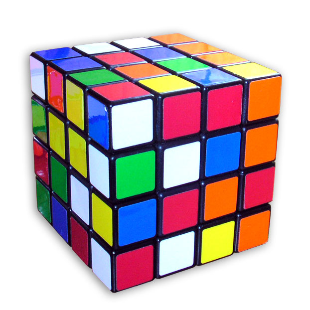
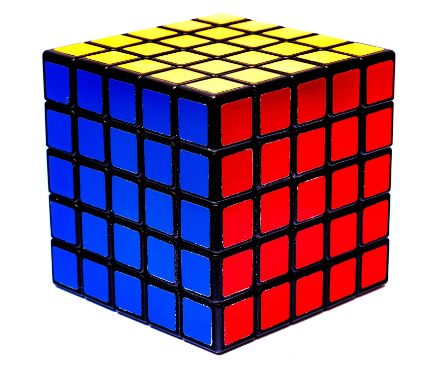
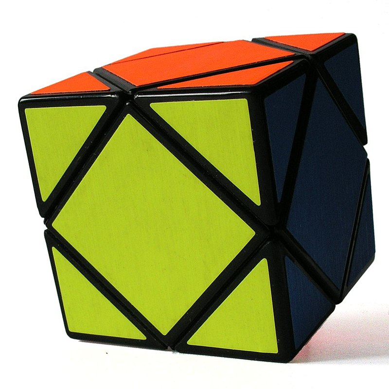

Cubo de Rubik
Cubo de Rubik
Información
El Cubo de Rubik es un rompecabezas mecánico tridimensional creado por el escultor y profesor de arquitectura húngaro Ernő Rubik en 1974.

Originalmente llamado «cubo mágico», el rompecabezas fue licenciado por Rubik para ser vendido por Ideal Toy Company en 1980
Un cubo de Rubik clásico posee seis colores uniformes (tradicionalmente blanco, rojo, azul, naranja, verde y amarillo).

Matemática
El cubo de Rubik original (3×3×3) tiene ocho vértices y doce aristas.
Hay 8 ! (40 320) formas de combinar los vértices del cubo.
Siete de estas pueden orientarse independientemente y la orientación de la octava dependerá de las siete anteriores, dando 3^7 (2187) posibilidades.
A su vez hay 12!/2 (239 500 800) formas de disponer las aristas, dado que una paridad de las esquinas implica asimismo una paridad de las aristas.
Once aristas pueden ser volteadas independientemente y la rotación de la duodécima dependerá de las anteriores, dando 2^11 (2048) posibilidades.
En total el número de permutaciones posibles en el cubo de Rubik es de:
Es decir, cuarenta y tres trillones doscientos cincuenta y dos mil tres billones doscientos setenta y cuatro mil cuatrocientos ochenta y nueve millones ochocientos cincuenta y seis mil permutaciones.
Otras versiones
Cubo de bolsillo
Aunque mecánicamente es más complejo que el Cubo de Rubik, su resolución es mucho más sencilla, ya que es análoga a reordenar únicamente los vértices de un cubo de Rubik estándar 3x3x3.

Venganza de Rubik
Al contrario de lo que ocurre con el cubo original y con la versión 5x5x5; no posee piezas fijas: las caras centrales, divididas en cuatro piezas, pueden moverse a diferentes posiciones.

Cubo del Profesor
Es la versión de 5x5x5 del cubo de Rubik. Tiene características en común tanto con la versión original del cubo de 3x3x3 como con la versión de 4x4x4.

Skewb
el skewb está cortado por solo cuatro planos perpendiculares a las diagonales principales. Una rotación o movimiento consiste en rotar 120 grados cualquiera de estos semicubos.

Ventas
Hasta enero de 2009 se vendieron 350 millones de cubos en todo el mundo, convirtiéndolo no solo en el rompecabezas más vendido, sino que es considerado, en general, el juguete más vendido del mundo.